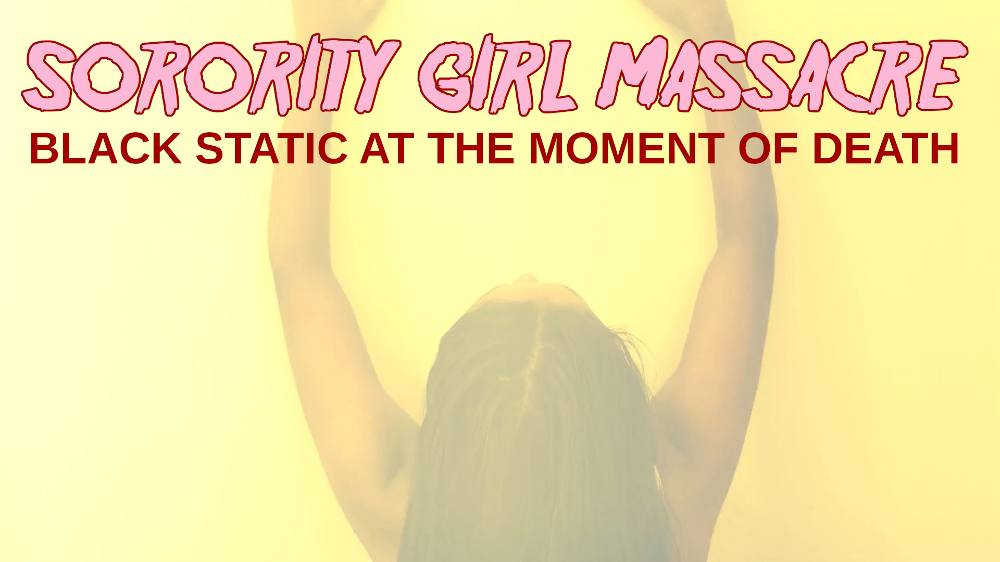

SORORITY GIRL MASSACRE ASMR HORROR MOVIE SERIES | Soft Relax Media
home | blog | video library | rumble
Sorority Girl Massacre is an ASMR slasher horror movie series created in 2024 by Soft Relax Media. Inspired by SOV slasher movies, murderdrone aesthetics, slow cinema, digital textures, and shot with microbudget efficiency, Sorority Girl Massacre movies have been called "uncomfortable horror," "erotic and uncomfortable," "icky," and "extremely fascinating." To watch the Sorority Girl Massacre full movies, visit our Soft Relax Media main page.
The Creation of an ASMR slasher horror movie series.
These ASMR slasher horror movies were made with love. I remember when I first watched Jim Wynorski's Sorority House Massacre II alongside Sorority House Massacre III aka Hard to Die. These movies were golden to me. They presented a simple narrative with appealing visual elements. Not only that, but they followed a similar narrative arc, though worked with this arc in different ways. Alongside classics such as Friday the 13th and Halloween, these lower-budget B-movie slashers would come to shine in the field of my imagination. And not only, but the idea of the "sorority" as a liminal space of contact would become central to the creation of this ASMR horror movie series. Following such titles as Sorority House Massacre, Slumber Party Massacre, or even The House on Sorority Row, I wanted to summon a title that would capture the expansive spirit of a good slasher. A good slasher movie should exist as an open-ended system. The myth should be allowed to flourish and mutate, to expand and surprise with each new entry. I wanted to tap into a title and a concept that would allow my own imagination to bring these liminal slasher features to life.
Sorority House Massacre: Black Static at the Moment of Death

Sorority Girl Massacre: Black Static at the Moment of Death was originally released on YouTube in early August 2024. However, little did I know that YouTube would begin terminating channels that expressed any kind of alternative forms of graphic beauty. Simply said, the Soft Relax Media themes were too confrontational for that platform, thus resulting in its sudden removal.
This ASMR slasher movie presents the slasher from their own liminal viewpoint. The slasher exists as a kind of presence with the ability to remote view into the mythical sorority house where the sorority girls exist. But even this does not fully capture the story. This is also a story of loss and beauty, of grief and longing. I wanted to express the idea that the slasher could have a rich interior life. What if Jason Vorhees was a poet? What if Michael Myers read Lacan or Bataille? What if Leatherface appreciated the gentle aesthetics of the human body? And yet, I did not want the slasher to be fully human. I don't believe he is. He exists on the periphery of the human condition. He is like a Thetan, a disembodied (or sub-bodied) entity that becomes flesh and blood through a kind of ritual or inhabitation. This is his mystery. I stand before the altar of the slasher movie Sledgehammer and open its doors. I walk down its halls and wear its beauty on my sleeve. I give it all of my love. Beyond all of the "Sorority House" and "Slumber Party" horror movie series, perhaps David Prior's Sledgehammer holds the key to this particular movie's inspiration. Or, perhaps Soft Relax Media as an ASMR studio, gave birth to this kind of body horror ritual that taps into fetish, into the primal rawness of the human condition, and of female beauty.
Sorority Girl Massacre: Guts of Ecstasy
Sorority Girl Massacre: Guts of Ecsasy exists in its own world. Originally released on August 14th, 2024, this movie went live on YouTube, but was purged when YouTube removed the Soft Relax Media channel. This horror movie feeds off of the SOV haunted house aesthetic more than anything, though perhaps it leans more into the world of horror possession, of friendship, and the distance between people, and of supressed desire. All shot on beautiful digital. Filmed in one night in Hawthorne, California, this unique horror movie tells the story of two sorority girls who descend into madness while inhabiting a particular magical space. I believe certain spaces can hold energy. Perhaps there are physical places that are more than physical spaces. They are doors or portals to other world. Twin Peaks is an inspiration. This idea that these girls have entered a kind of liminal portal, and that portal has summoned forth the slasher, is the backbone of this movie. And yet, it's shot through with its own mystery. The final act is an incomprehensible ritual action that unfolds with precision and beauty, with poetic grace and love. I truly believe this. I'm in awe of how wonderful Ziva Fey and Autumn Ehr are in this movie. It was a dream-like shoot, and the results continue to astound me. The title of this horror movie is inspired by the movie Entrails of a Virgin, which I admire very much for its tone and texture.
ASMR Horror Videos
Soft Relax Media creates confrontational avant-clinical and ASMR-adjacent narratives and non-narrative explorations. The idea of "ASMR" movies and/or "Ambient Horror" or "Liminal Horror" are not unique to this project. However, what is unique, is our particular dimension in space, our viewpoint that places us where we are, with our own resources, and with our own inner static landscape. The idea of ASMR Horror is simply to be able to sit with, to confront and to experience the sensorial aspect of horror (or cinema, in general). To be able to feel the movie crawl across your skin. To be able to feel the movie as it creeps up the back of your neck or spreads down like nectar or syrup from the crown of your head. Feel the narrative like it's a mass of waste, or a liquid experience. Feel time pass slowly. Or become so absorbed in the moment that the movie becomes a timeless meditation. This all sounds very academic whereas the reality is that we exist from our own ASMR coordinates every moment of our life. Our body itself is a kind of cinematic experience. These horror movies, this horror movie series, simply expands upon a somatic experience that we are already fully seeped in. Our goal is to continue bring radically honest work to life. We must be honest in what we observe and how we observe it. We must shoot with honesty. Thank you for enjoying Sorority Girl Massacre and we welcome you to explore our work further as your interest permits. Until then, we'll see you against the white walls of our love. Be there now.